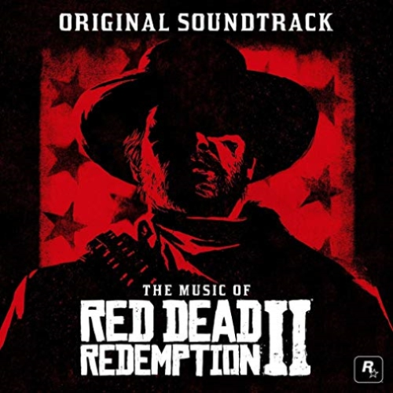

Red Dead Redemption 2
Red Dead Redemption 2 ganó el mejor puntaje / música en The Game Awards 2018 , Mejor música de videojuegos en IGN ' s Best of 2018 Awards, y Mejor música de Giant Bomb. También fue nominado para el Premio Tin Pan Alley a la Mejor Música en un Juego en los Premios del Juego de Nueva York, y Excelencia en la partitura musical en los 6tos Premios SXSW Gaming. Lanois y su banda Heavy Sun interpretaron varias canciones del juego junto con Giddens en The Game Awards el 6 de diciembre de 2018. Jackson dirigió una actuación en vivo de una hora de la banda sonora del juego en elRed Bull Music Festival en Los Ángeles el 23 de febrero de 2019. Lanois interpretó música de la banda sonora del juego con su banda en Amoeba Music el 19 de septiembre de 2019. En septiembre de 2019, como parte de su serie Amazon Originals, Amazon Music contrató a Giddens para grabar una versión de "Cruel World", mientras que Lanois y su banda Heavy Sun cubrieron "That's the Way It Is".
